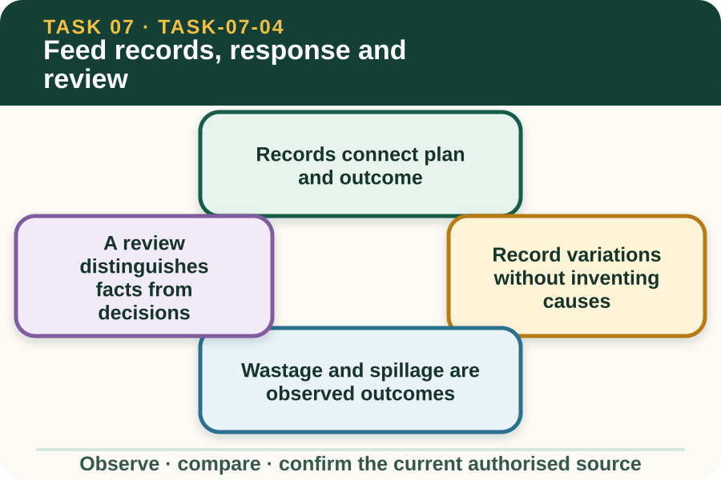

Learning purpose
Record what was supplied and observed, then identify what follow-up information is needed.
Task 7 · Lesson 4 of 4
Record what was supplied and observed, then identify what follow-up information is needed.
Learning purpose
Record what was supplied and observed, then identify what follow-up information is needed.
Success criteria
Learning boundary
Supplementary learning and formative practice only. Current RTO assessment, local procedures and authorised supervision control real work.

A feeding record should identify the current plan, livestock group, date, authorised task, recorded quantities and person responsible for each entry. It creates traceability between instruction and documented outcome.
A complete-looking form is not reliable when its identifiers, units or source revision do not match. Quality review checks these relationships before interpreting any result.
AHCLSK229 includes recording variations in eating and drinking patterns and reporting feeding abnormalities. A strong entry describes who or which group, what changed, when, where and compared with which authorised record.
The learner does not label the variation as disease, poor nutrition or deliberate behaviour. Those explanations require broader evidence, comparison with current authorised sources and appropriate professional expertise.
Records may include observable material remaining, spilled or otherwise not accounted for under the approved process. Use current workplace fields and units so the information can be compared accurately.
Do not assume every difference is waste or prescribe a disposal response. Storage, timing, record error, access and other contextual factors may need careful authorised workplace review.
Review begins by reconciling plan identity, source values, supplied record and observation fields. Each discrepancy is listed separately so one confident explanation does not hide several possible issues.
The authorised supervisor determines whether the plan, record, facilities, timing or other controls need attention. The learner provides traceable evidence and applies only confirmed directions.
Fictional worked example
Record evidence: At fictional Kurrajong Farm, group M2 is linked to approved Plan 7. The supplied record contains the correct date and unit but one station field is blank, while the observation note says two animals arrived after the recorded period. Decision and reason: Zoe cannot calculate the missing supply, decide whether the animals missed feed or alter the next task. Safe action: She preserves the blank, reports the late-arrival observation and identifies the matching plan. Result: The supervisor reviews timing and records. Next check or record: Zoe enters the confirmed clarification without inventing a value or feeding response.
A good follow-up question points to missing evidence: Was this field not observed, not recorded or not completed? Which plan revision applied? Who can confirm the time or group identity?
Questions should not contain a hidden recommendation such as assuming more feed is required. They help the authorised reviewer find the source and decide whether any change is justified.
Real enterprise feeding records can contain property, livestock, supplier and worker information. Keep those records in their authorised system and follow current access, correction and retention requirements.
This fictional learning record supports communication and review practice. It is not a workplace feeding record, RTO submission, animal-health decision or proof of competent performance.
Formative practice
Each option explains the consequence. These answers save only on this device.
Written application
Apply and keep a learning record
Annotate a fictional plan and outcome record, mark one missing value and one changed observation, then draft three answer-neutral review questions. Do not fill the gap or suggest any feeding change.
Learning record: A supplementary post-task reconciliation and authorised-review brief suitable for teacher feedback.
Lesson responses and the activity are formative learning only. Formal sufficiency and competence remain with the current RTO process.
Next: return to the task hub and follow the teacher-confirmed assessment direction.
Source basis: AHCLSK229 Release 1 requirements to monitor feeding, record variations and abnormalities, maintain records and report outcomes. Current enterprise records, approved feeding plan, livestock expertise and supervisor direction control interpretation and follow-up.